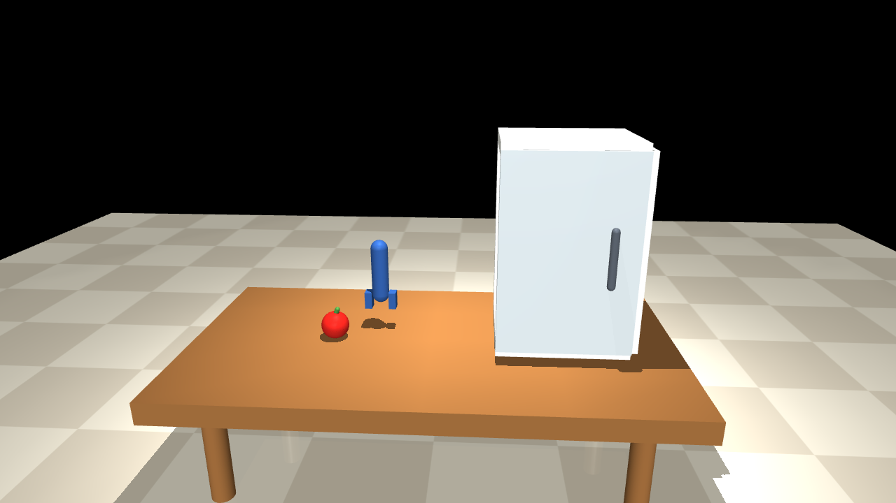
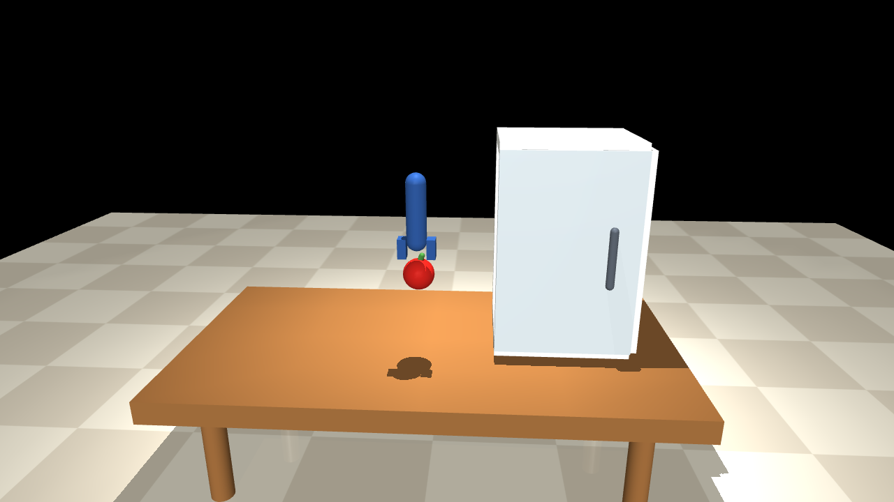
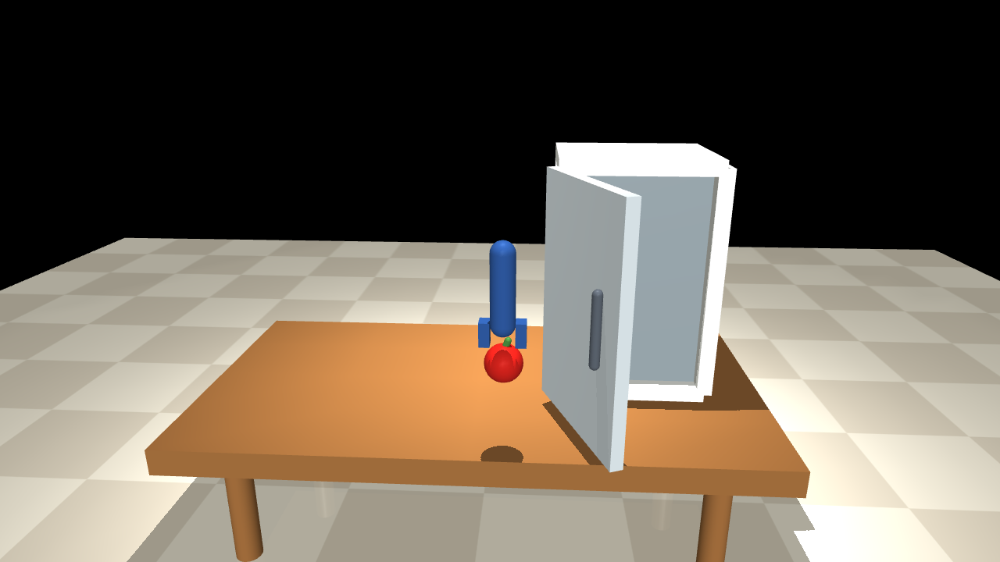

Layer 1
Reasoning
LLM/VLM proposes or replaces a skill plan at start, on replan, and after low-confidence escalation.
Institute of Embodied Intelligence, Happy Heroes University
Preprint, 2026
Long-horizon embodied agents repeatedly face closed-form questions during execution: Did the grasp hold? Did the skill succeed? Should the controller retry, replan, or escalate? Current stacks often answer these questions by invoking an LLM or VLM at every step, even when the answer space is tiny. We present RoboJev, a three-layer architecture that separates open-ended reasoning from high-frequency structured decisions. A Reasoning layer writes or revises skill plans only when needed. A Decision layer returns typed judgments with confidence in the style of System-One models such as Jev. An Action layer executes skills. Confidence-gated escalation routes only uncertain cases back to Reasoning. In a symbolic kitchen task with MuJoCo display rendering, RoboJev completes clean, slip, ambiguous-sensor, and early door-close episodes while cutting reasoner calls versus a replan-every-step baseline.
Reason rarely. Decide often. Act with skills.
Layer 1
LLM/VLM proposes or replaces a skill plan at start, on replan, and after low-confidence escalation.
Layer 2
After every skill: grasp_ok, skill_done, failure type, recovery — typed answers with confidence.
Layer 3
Skill controllers run pick / move / open / place / close. Control uses state text, not pixels.
MuJoCo frames are for display. The agent never reads these images.


Task: put an apple into a fridge and close the door. Decision uses a local System-One stand-in with Jev's answer schema; Reasoning uses a hosted chat model. The baseline asks the reasoner after every skill. Rendered on one NVIDIA H800.
| Episode | RoboJev reasoner | Baseline reasoner | Decision calls | Behavior |
|---|---|---|---|---|
| Clean | 1 | 6 | 5 | continue ×5 |
| Slip | 1 | 7 | 6 | local retry |
| Ambiguous sensors | 2 | 6 | 5 | escalate |
| Door closes early | 2 | 8 | 7 | replan |




This preprint is intentionally minimal. The world is symbolic; Decision is a schema-compatible local model unless a hosted System-One API is provided; and we do not claim EDBench-scale evaluation, real-robot transfer, or learned calibration. Failure modes include over-eager escalation, brittle LLM plan schemas, and display scenes that overstate geometric fidelity. Future work includes training Decision on robot traces, evaluating on standard embodied benchmarks, closing the loop with real sensors, and studying when confidence is trustworthy enough to suppress LLM calls safely.
@misc{tegong2026robojev,
title={RoboJev: Confidence-Gated Structured Decision Making for Long-Horizon Embodied Agents},
author={Tegong, Guobao},
year={2026},
howpublished={\url{https://robojev.github.io}},
note={Preprint}
}